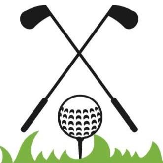

My name is Kaleb Wagner. I grew up in the Lynnwood/Edmonds area, and have attended Edmonds College since it was called a community College.
I first attended a program through the college called EdCap, which is short for Edmonds Career
Access Program. It's essentially an alternative high school program, but if you "game the system" you can
get a bunch of college credits for free. I attended EdCap for a few years, slowly accumulating college credits
before moving to Bellingham with the hopes of attending WWU. There were a few complications that led to me taking
a few years away from school. I moved back to the Lynnwood area about a year ago, and have been attending Edmonds College
since then.
My name is Kaleb Wagner. I grew up in the Lynnwood/Edmonds area, and have attended Edmonds College since it was called a community College.
I first attended a program through the college called EdCap, which is short for Edmonds Career
Access Program. It's essentially an alternative high school program, but if you "game the system" you can
get a bunch of college credits for free. I attended EdCap for a few years, slowly accumulating college credits
before moving to Bellingham with the hopes of attending WWU. There were a few complications that led to me taking
a few years away from school. I moved back to the Lynnwood area about a year ago, and have been attending Edmonds College
since then.
I currently work as a bartender/server at a restaurant on the waterfront in Edmonds called Demetri's Woodstone Taverna. I've been bartending for a few years and I absolutely love it. I get to be creative with cocktails, and constantly try new things. If we're in a rush, and I have to make 12 cocktails, pour 8 beers, 2 glasses of wine, and serve a bottle of wine, it feels like a puzzle. It's a constant game of trying to be as efficient as possible while serving quality drinks. During slow times, I get to entertain guests while helping them find a cocktail that suits their palate, or design one on the spot with there preferences in mind. The coworkers in the service industry are a unique bunch of people. The industry attracts a certain type of crazy person and they're what make it so enjoyable. The 32 year-old felon line cook with 4 daughters is sure to have a crazy tale or two if you give him a chance to tell you.
 In addition to my school and work life, I recently got into golf! I started golfing in June of this year, and instantly got addicted. There's something so satisfying when you strike the ball well. It makes this unmistakable sound, and flies through the air in a way that makes all of the other bad shots not matter. It's a very difficult game, but that's a big reason I'm drawn to it. Another big reason, is that it's time outside with your friends. I've only played courses in this area, but I've played at: Legion Memorial Park, City of Lynnwood Municipal Golf Course, Jackson Park Golf Course, Jefferson Park Golf Course, Walter E. Hall Golf Course, and Nile Shrine Golf Course.
I have a few more interests which I talk about more in depthly on my interests page if you'd like to find out more!